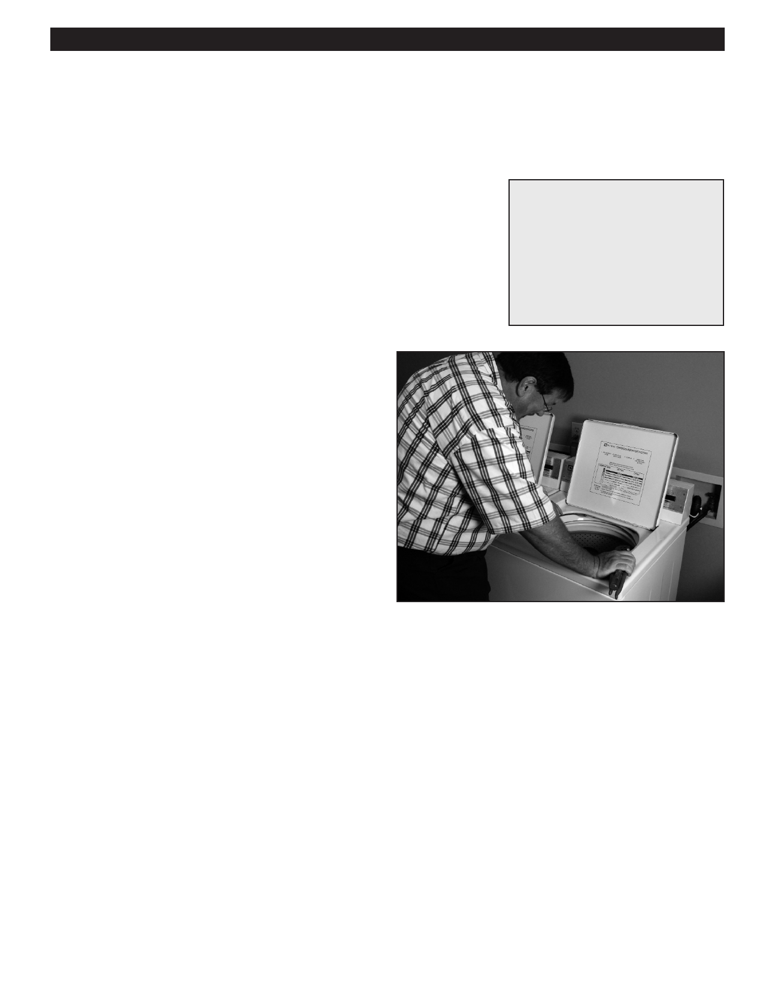

PA RT I C I PA N T R E S O U R C E G U I D E
Testing and Replacing a Lid Switch
If the washer will not start, one of the first things to check is the lid switch. It’s actually a
safety device for the machine.
Safety
Tools and Materials Needed
Make sure the power to the washer is off.
Screwdriver
Use lockout/tagout procedures.
Insulated combination tool
Lockout/tagout device
Wear eye protection when working with electrical systems.
Rags or towels
Multimeter
Lid switch
How-to Steps
1. Unplug washer or turn off electricity to washer at main
electrical panel.
2. Logout/tagout the plug or panel.
3. Clean the area around lid switch removing built up
detergent and lint. This itself may solve the problem.
4. If cleaning alone does not solve the problem, remove
cabinet housing.
5. Remove switch.
6. Use multimeter on RX1 setting to test switch:
• Touch one probe to one terminal and the other
probe to the other terminal.
• Close washer lid.
• The display should show zero. If not, replace
lid switch.
7. Attach a new lid switch.
8. Replace cabinet housing.
9. Turn on electricity to washer.
10. Turn on washer and check operation.
Notes:
34